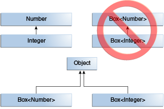

Java Generic
업데이트:
Generic
- 클래스, 인터페이스 및 메서드를 정의할 때 유형이 매개변수가 되도록 한다.
- 코드 내부에서 사용할 자료형을 외부에서 지정하는 기법이다.
사용의 이점
- 컴파일 시, 강력한 타입 검사를 통해 런타임 오류를 방지한다.
- 캐스팅을 제거하여 불필요한 코드를 줄인다.
// The following code snippet without generics requires casting. List list = new ArrayList(); list.add("hello"); String s = (String) list.get(0); // When re-written to use generics, the code does not require casting. List<String> list = new ArrayList<String>(); list.add("hello"); String s = list.get(0); // no cast - 다양한 유형의 컬렉션에서 작업할 수 있고, 커스터마이징 가능하며, 안전한 타입, 가독성 좋은 제네릭 알고리즘을 구현할 수 있다.
종류
Parameterized Type
- 타입 매개 변수(K, V)를 매개 변수화 타입(List
)으로 대체할 수 있다. OrderedPair<String, Box<Integer>> p = new OrderedPair<>("primes", new Box<Integer>(...));
Generic Method
- 제네릭 메서드는 자체 타입 매개 변수를 도입하는 메서드이다.
- 제네릭 타입을 선언하는 것 과 비슷하지만 타입 매개 변수의 범위는 메서드로 제한된다.
public class Pair<K, V> { private K key; private V value; public Pair(K key, V value) { this.key = key; this.value = value; } public void setKey(K key) { this.key = key; } public void setValue(V value) { this.value = value; } public K getKey() { return key; } public V getValue() { return value; } } public class Util { public static <K, V> boolean compare(Pair<K, V> p1, Pair<K, V> p2) { return p1.getKey().equals(p2.getKey()) && p1.getValue().equals(p2.getValue()); } }public class Main { public static void main(String[] args) { // The complete syntax for invoking this method would be. Pair<Integer, String> p1 = new Pair<>(1, "apple"); Pair<Integer, String> p2 = new Pair<>(2, "pear"); boolean same = Util.<Integer, String>compare(p1, p2); // The type has been explicitly provided, as shown in bold. Generally, this can be left out and the compiler will infer the type that is needed. same = Util.compare(p1, p2); } }
Bounded Type Parameter
- 매개 변수화 타입의 타입 인수로 사용할 수 있는 타입을 제한할 수 있다.
public class Box<T> { ... public <U extends Number> void inspect(U u) { // The parameter u is only allowed in classes that inherit Number. System.out.println("T: " + t.getClass().getName()); System.out.println("U: " + u.getClass().getName()); } } public class Main { public static void main(String[] args) { Box<Integer> integerBox = new Box<Integer>(); integerBox.set(new Integer(10)); integerBox.inspect("some text"); // error: this is still String! } } - 바인딩된 타입 매개 변수는 제네릭 알고리즘 구현의 핵심이다.
public class Main { // The greater than operator (>) applies only to primitive types such as short, int, double, long, float, byte, and char. public static <T> int countGreaterThan(T[] anArray, T elem) { int count = 0; for (T e : anArray) { if (e > elem) { // compiler error. ++count; } } return count; } // To fix the problem, use a type parameter bounded by the Comparable<T> interface. This is recursive type bound. public static <T extends Comparable<T>> int countGreaterThan(T[] anArray, T elem) { int count = 0; for (T e : anArray) { if (e.compareTo(elem) > 0) { ++count; } } return count; } }
Generics, Inheritance, and Subtypes
- 타입이 호환되는 경우 한 타입의 객체를 다른 타입의 객체에 할당 할 수 있다.
public class Main { public static void main(String[] args) { // Can assign an Integer to an Object, since Object is one of Integer's supertypes. Object someObject = new Object(); Integer someInteger = new Integer(10); someObject = someInteger; // OK // Integer is also a kind of Number. someMethod(new Integer(10)); // OK someMethod(new Double(10.1)); // OK // any subsequent invocation of add will be allowed if the argument is compatible with Number. Box<Number> box = new Box<Number>(); box.set(new Integer(10)); // OK box.set(new Double(10.1)); // OK } public static void someMethod(Number n) { /* ... */ } } - 두 개의 구체적인 유형 A와 B가 주어지면 MyClass<A>는 A와 B가 관련되어 있는지 여부에 관계없이 MyClass<B>와 관련이 없다. MyClass<A>와 MyClass<B>의 부모는 Object이다.
 - 클래스 또는 인터페이스를 확장하거나 구현하여 하위 유형을 지정할 수 있다.

// That associates an optional value of generic type P with each element. public interface PayloadList<E, P> extends List<E> { void setPayload(int index, P val); } - PayloadList는 List<String>의 서브타입으로 아래의 형태를 가질 수 있다.

- PayloadList<String, String>
- PayloadList<String, Integer>
- PayloadList<String, Exception>
Upper Bounded Wildcards
- 변수에 대한 제한을 완화할 수 있다.
public class Main { public static void main(String[] args) { // Using a list of Integer objects, prints sum = 6.0. List<Integer> li = Arrays.asList(1, 2, 3); System.out.println("sum = " + sumOfList(li)); // A list of Double values can use the same sumOfList method. The following code prints sum = 7.0. List<Double> ld = Arrays.asList(1.2, 2.3, 3.5); System.out.println("sum = " + sumOfList(ld)); } public static void process(List<? extends Foo> list) { for (Foo elem : list) { // ... } } public static double sumOfList(List<? extends Number> list) { double s = 0.0; for (Number n : list) { s += n.doubleValue(); } return s; } }
Unbounded Wildcard Type
- 와일드카드 문자열 '?'를 사용하여 변수에 대한 제한을 하지 않을 수 있다.
public class Main { public static void main(String[] args) { // Because for any concrete type A, List<A> is a subtype of List<?>, you can use printList to print a list of any type. List<Integer> li = Arrays.asList(1, 2, 3); List<String> ls = Arrays.asList("one", "two", "three"); printList(li); printList(ls); } public static void printList(List<?> list) { for (Object elem: list) { System.out.print(elem + " "); } System.out.println(); } }
Lower Bounded Wildcards
- super 키워드 다음에 와일드카드 문자열 '?'와 lower bound를 표기하는 <? super A>를 사용하여 해당 타입과 상위 타입으로 제한 할 수 있다.
public class Main { public static void main(String[] args) { addNumbers(new ArrayList<Number>()); } public static void addNumbers(List<? super Integer> list) { for (int i = 1; i <= 10; i++) { list.add(i); } } }
Wildcard And Subtyping
- 와일드 카드를 사용하여 제네릭 클래스 또는 인터페이스 간의 관계를 만들 수 있다.
public class Main { public static void main(String[] args) { // It would be reasonable to write the following code. B b = new B(); A a = b; // Class B is a subtype of class A if B extends A. This rule does not apply to generic types. List<B> lb = new ArrayList<>(); List<A> la = lb; // compile-time error } } - Integer가 Number의 하위 타입이지만 List<Number>와 List<Integer>.의 공통 부모는 List<?>이다.

- List의 제네릭 타입을 상위 타입인 Number와 하위 타입인 Integer를 사용 한 예제이다.
public class Main { public static void main(String[] args) { ... // In order to create a relationship between these classes so that the code can access Number's methods through List<Integer>'s elements, use an upper bounded wildcard:. List<? extends Integer> intList = new ArrayList<>(); List<? extends Number> numList = intList; // OK. List<? extends Integer> is a subtype of List<? extends Number> } }
Wildcard Capture and Helper Methods
- 경우에 따라서 컴파일러는 코드(List<?>)에서 와일드카드 타입을 유추한다.
- 대부분 “capture of”라는 문구가 포함된 오류 메시지가 포함되어 표시가 된다.
- 해당 컴파일러 오류를 해결하기 Helper Method를 정의하여 해결할 수 있다.
public class WildcardError { void foo(List<?> i) { i.set(0, i.get(0)); // The method set(int, capture#1-of ?) in the type List<capture#1-of ?> is not applicable for the arguments (int, capture#2-of ?) } } public class WildcardFixed { void foo(List<?> i) { fooHelper(i); } // Helper method created so that the wildcard can be captured // through type inference. private <T> void fooHelper(List<T> l) { l.set(0, l.get(0)); } } - 더 복잡한 예제이다.
public class WildcardErrorBad { public static void main(String[] args) { List <Integer> li = Arrays.asList (1, 2, 3); List <Double> ld = Arrays.asList (10.10, 20.20, 30.30); swapFirst(li, ld); } private static void swapFirst(List<? extends Number> l1, List<? extends Number> l2) { Number temp = l1.get(0); l1.set(0, l2.get(0)); // Expected a CAP#1 extends Number, got a CAP#2 extends Number. same bound, but different types. l2.set(0, temp); // Expected a CAP#1 extends Number, got a Number. } }Exception in thread "main" java.lang.Error: Unresolved compilation problems: The method set(int, capture#2-of ? extends Number) in the type List<capture#2-of ? extends Number> is not applicable for the arguments (int, capture#3-of ? extends Number) The method set(int, capture#4-of ? extends Number) in the type List<capture#4-of ? extends Number> is not applicable for the arguments (int, Number) at gracefulsoul.blog.generic.wildcard.capture.WildcardErrorBad.swapFirst(WildcardErrorBad.java:17) at gracefulsoul.blog.generic.wildcard.capture.WildcardErrorBad.main(WildcardErrorBad.java:11)
Erasure of Generic Types
- Java 컴파일러는 모든 타입 매개 변수를 지우고 타입 매개 변수가 바운드 된 경우 첫 번쨰 바운드로 대체하고, 바운드 되지 않은 경우 Object로 바운드한다.
public class Node<T> { private T data; private Node<T> next; public Node(T data, Node<T> next) { this.data = data; this.next = next; } public T getData() { return data; } // ... } // Because the type parameter T is unbounded, the Java compiler replaces it with Object public class Node { private Object data; private Node next; public Node(Object data, Node next) { this.data = data; this.next = next; } public Object getData() { return data; } // ... }public class ComparableNode<T extends Comparable<T>> { private T data; private ComparableNode<T> next; public ComparableNode(T data, ComparableNode<T> next) { this.data = data; this.next = next; } public T getData() { return data; } // ... } // The Java compiler replaces the bounded type parameter T with the first bound class, Comparable. public class ComparableNode { private Comparable data; private ComparableNode next; public ComparableNode(Comparable data, ComparableNode next) { this.data = data; this.next = next; } public Comparable getData() { return data; } // ... }
Erasure of Generic Methods
- Java 컴파일러는 제네릭 메소드 인수의 타입 매개 변수도 지운다.
// Counts the number of occurrences of elem in anArray. public static <T> int count(T[] anArray, T elem) { int cnt = 0; for (T e : anArray) { if (e.equals(elem)) { ++cnt; } return cnt; } } // Because T is unbounded, the Java compiler replaces it with Object. public static int count(Object[] anArray, Object elem) { int cnt = 0; for (Object e : anArray) { if (e.equals(elem)) { ++cnt; } return cnt; } }class Shape { public static <T extends Shape> void draw(T shape) { /* ... */ } } //The Java compiler replaces T with Shape. class Shape { public static void draw(Shape shape) { /* ... */ } }
Bridge Methods
- 매개 변수화 된 클래스와 인터페이스를 확장 및 구현하는 클래스 또는 인터페이스를 컴파일 할 때, 컴파일러는 Bridge Method라는 합성 메서드를 만들수도 있다.
public class Node { public Object data; public Node(Object data) { this.data = data; } public void setData(Object data) { System.out.println("Node.setData"); this.data = data; } } public class MyNode extends Node { public MyNode(Integer data) { super(data); } public void setData(Integer data) { System.out.println("MyNode.setData"); super.setData(data); } } public class MyNode extends Node { ... // Bridge method generated by the compiler. public void setData(Object data) { setData((Integer) data); } }Non-Reifiable Types
- 수정 가능한 타입은 타입의 정보를 런타임시에 이용할 수 있는 타입이다.
- 수정 불가능한 타입은 Type Erasure로 컴파일 시 정보가 삭제된 타입으로, 런타임에 모든 정보를 사용 할 수 없다.
Heap Pollution
- 매개 변수화 된 타입이 매개 변수화 된 타입이 아닌 객체를 참조 할 떄 발생한다.
- 예를 들어, 원시 타입과 매개 변수화 된 타입을 혼합하거나 확인되지 않은 캐스트를 수행할 때 발생한다.
Potential Vulnerabilities of Varargs Methods with Non-Reifiable Formal Parameters
- Varargs 입력 매개 변수를 사용하는 제네릭 메서드는 힙 오염을 일으킬 수 있다.
public class ArrayBuilder { public static <T> void addToList(List<T> listArg, T... elements) { for (T x : elements) { listArg.add(x); } } public static void faultyMethod(List<String>... l) { Object[] objectArray = l; // Valid objectArray[0] = Arrays.asList(42); String s = l[0].get(0); // ClassCastException thrown here } } public class HeapPollutionExample { public static void main(String[] args) { List<String> stringListA = new ArrayList<String>(); List<String> stringListB = new ArrayList<String>(); ArrayBuilder.addToList(stringListA, "Seven", "Eight", "Nine"); ArrayBuilder.addToList(stringListB, "Ten", "Eleven", "Twelve"); List<List<String>> listOfStringLists = new ArrayList<List<String>>(); // Type safety: A generic array of List<String> is created for a varargs parameter. ArrayBuilder.addToList(listOfStringLists, stringListA, stringListB); ArrayBuilder.faultyMethod(Arrays.asList("Hello!"), Arrays.asList("World!")); } }
Prevent Warnings from Varargs Methods with Non-Reifiable Formal Parameters
- 매개 변수화 타입의 매개 변수를 가지는 varargs 메서드에 아래의 어노테이션을 사용함으로써, 컴파일러가 생성하는 ClassCastException 혹은 이와 유사한 다른 Exception들을 방지할 수 있다.
Reference
※ 본 글은 Oracle-Java_Tutorial_Generic을 기반으로 작성하였습니다.
※ Sample Code는 여기에서 확인 가능합니다.